Repair Procedures
Removal
1. Disconnect the negative (-) battery terminal.
2. Loosening the head lamp mounting bolts (3EA) and disconnect the head lamp connector (B).
Then, remove the head lamp assembly (A).
NOTE:
- Take care not to scratch the head lamp lens or fender.
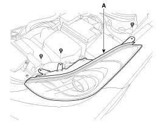
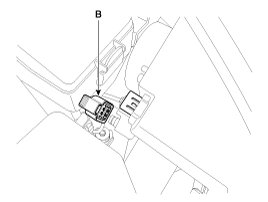
NOTE:
Take care that holding clip (A) is not to be damaged.
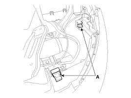
3. Remove the dust caps from the head lamp assembly after turning in the counter clock-wise direction.
Headlamp(low) bulb
1. Turn off the lamp power.
2. Disconnect the connector.
3. Remove the dust cap (A).
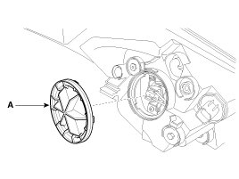
4. Disconnect the connector.
5. Turn the bulb (A) counterclockwise to remove the head lamp low bulb.
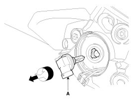
Head lamp(High)
1. Turn off the lamp power.
2. Remove the dust cap(A).
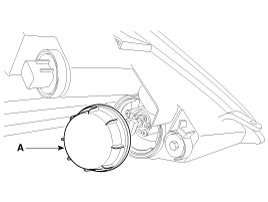
3. Remove the connector(A) and fixing clip(B).
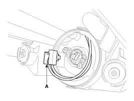
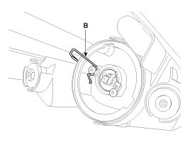
4. Remove the bulb(A).
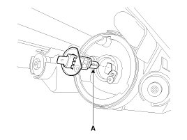
Turn signal lamp
1. Turn off the lamp power.
2. Remove the socket and bulb(A) of turn signal lamp.
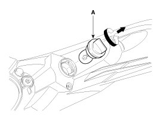
Installation
1. Install the head lamp bulbs.
2. Connect the connectors.
3. Install the head lamp bolts (3EA).
4. Connect the negative (-) battery terminal.
Head Lamp Aiming Instructions
The head lamps should be aimed with the proper beam-setting equipment, and in accordance with the equipment manufacturer's instructions.
NOTE:
If there are any regulations pertinent to the aiming of head lamps in the area where the vehicle is to be used, adjust so as to meet those requirements.
Alternately turn the adjusting gear to adjust the head lamp aiming. If beam-setting equipment is not available, proceed as follows:
1. Inflate the tires to the specified pressure and remove any loads from the vehicle except the driver, spare tire, and tools.
2. The vehicle should be placed on a flat floor.
3. Draw vertical lines (Vertical lines passing through respective head lamp centers) on the screen.
4. With the head lamp and battery in normal condition, aim the head lamps so the brightest portion falls on the vertical lines.
A : Vertical(Low, High)

Front Fog Lamp Aiming
The front fog lamps should be aimed as the same manner of the head lamps aiming.
With the front fog lamps and battery normal condition, aim the front fog lamps by turning the adjusting screw (A) with a driver.
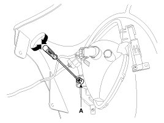
Head Lamp And Fog Lamp Aiming Point


1. Head Lamp (Low beam)
A. Turn the low beam on without driver aboard.
B. The cut-off line should be projected in the cut-off line shown in the picture.
C. If head lamp leveling device is equipped, adjust the head lamp leveling device switch with 0 positions.

2. Turn the front fog lamp on without the driver aboard.
The cut-off line should be projected in the allowable range (shaded region)